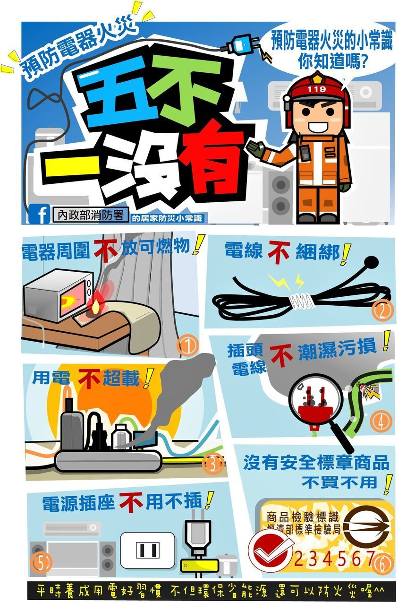
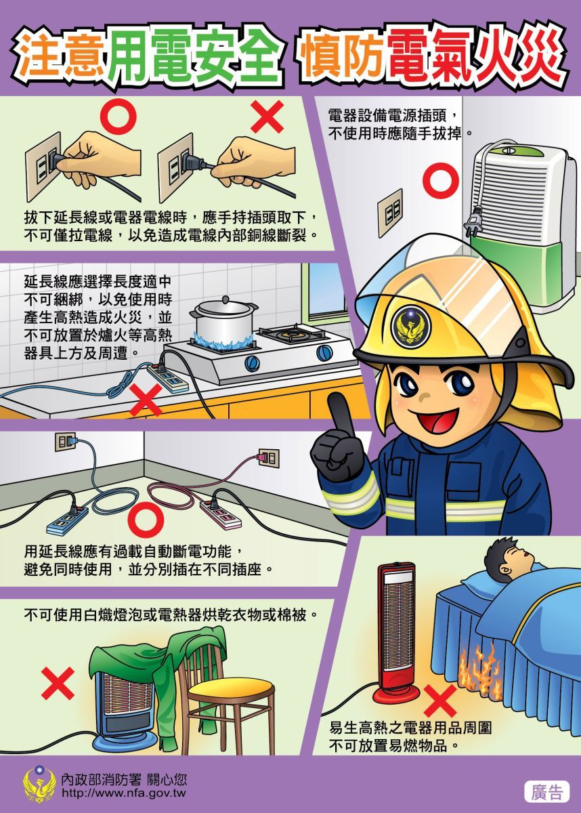

COMMUNITY FIRE SAFETY OUTREACH
吉貝社區｜電器五不一沒有
兩張宣導海報置中呈現，邀請大家一起認識正確用電觀念。

電器五不一沒有
注意用電安全，慎防電氣火災海報圖片由使用者提供；對外發布前請確認圖片使用授權及機關審核規範。
SAFETY SLOGANS
📣 用電安全標語
把安全觀念說得簡單、記得牢、做得到！
🔋
電源插座不用不插
電器不用就關閉，插頭安全要留意！
🔌
用電不超載
插座不超載，安全不意外！
🧵
電線不綑綁
電線不綑綁，散熱更順暢！
💧
插頭不潮濕污損
手乾再插拔，插頭常檢查！
🔥
電器旁不放可燃物
電器留空間，遠離易燃物！
🛒
沒有安全標章不買
認明檢驗標識，選購才安心！
五不一沒有，安全跟著走！
吉貝分隊關心您｜用電安全，從你我做起
LEARN & PREVENT
消防安全知識站
用簡單易懂的方式，認識生活中重要的安全觀念。
🔥
居家防火安全
確認爐火已關閉，不讓烹煮中的食物無人看顧；關閉不必要電器，保持逃生通道暢通。
🚨
住宅用火災警報器
依產品說明及所在地規定安裝，定期測試，並依說明清潔及更換電池或設備。
🔌
用電及鋰電池安全
高耗電電器避免共用延長線；電線勿綑綁、重壓或拉扯，留意充電與電池異常。
DISASTER PREPAREDNESS
災害來臨前，先做好準備
平時多一分準備，災時多一分安全。
🌏
地震避難
趴下、掩護、穩住；遠離玻璃及可能掉落物，搖晃停止後再依指示疏散。
🌧️
颱風防災
留意官方預報與警戒資訊，固定戶外物品，避免前往海邊、溪流及危險區域。
🎒
緊急避難包
備妥飲水、簡易糧食、照明、電池、常用藥品及重要聯絡資訊。
EMERGENCY RESPONSE
緊急救護知識
保持冷靜、清楚說明，讓救援人員能迅速掌握狀況。
📞
撥打119，說清楚四件事
發生什麼事、事故地點、現場是否有人受困或受傷、留下聯絡方式並依勤務中心指示處理。
❤️
CPR與AED
發現有人突然倒下、沒有反應且沒有正常呼吸時，請旁人撥打119及取得AED，依派遣人員指導及AED語音指示急救。
遇到緊急事故，請撥打119
先確保自身安全，並依照勤務中心指示應變。